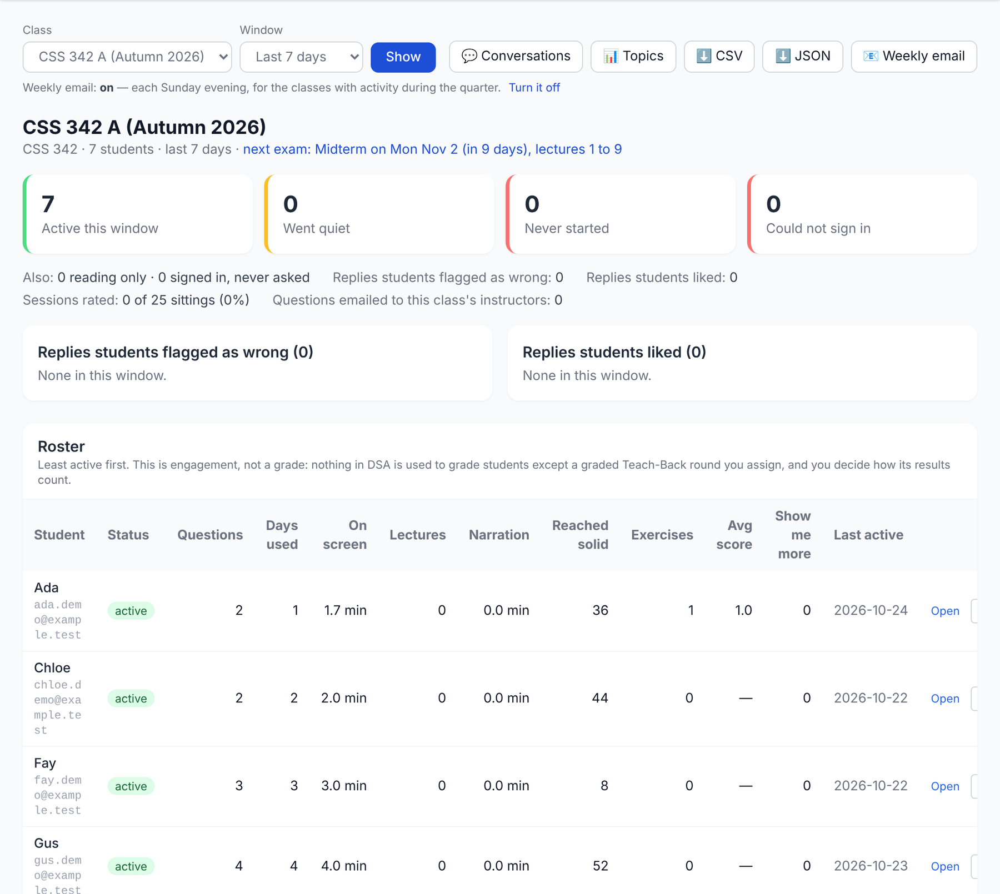

DSA · Digital Student Assistant
Put Your Course on DSA
You bring the materials. I build the course. You review it.
With CSS 430 Operating Systems as the worked example.
Yusuf Pisan
University of Washington Bothell, Computing & Software Systems
pisan@uw.edu · digital-student-assistant.com/instructors
What your students get
A tutor built from your course, that will not do the homework

- A chat that answers from your slides, recordings, textbook and assignments, with the slide open beside it.
- Hints instead of answers, set by what each student has shown on graded practice.
- A topic map, mastery checks, spaced review, quick checks, Teach-Back and exam readiness, all for your course's goals.
- A dashboard and a Sunday email for you.
The companion talk Hints, Not Answers covers the pedagogy. This one is about how a course gets built.
Under the hood
A course is a registry entry plus a set of generated, checked files
| Part | What it is | Made by |
|---|---|---|
| Registry entry | Number, title, topics, 20 lectures, language, prerequisites, books, on or off, public or private | hand |
| Lecture plan | Twenty entries: topics, objectives, timing, examples, demos, readings | drafted, then edited |
| Knowledge base | Your materials, chunked and stamped with the course, searched only for your course | pipeline |
| Goal graph | About four learning goals per lecture, with prerequisite edges | pipeline, then reviewed |
| Practice | Exercises; mastery questions with rubrics; find-my-bug programs (C++ only) | pipeline, checked |
| Decks and scripts | Twenty slide decks and a teaching script for each lecture | pipeline, then read |
| Teach-me openers | A pre-written explanation per goal, at three depths | pipeline |
| Narration (optional) | Each slide read aloud in a cloned voice | paid service |
The partnership
Who does what
Your materials and your dates
- Slides, recordings, textbook, assignments, course repos
- A topic list or last term's syllabus
- Exam dates and lecture ranges (not the exams)
- Your consent to use them, and a decision about the voice
The course, through the pipeline
- The knowledge base and the lecture plan
- Goals, exercises, mastery questions, decks, openers
- The checks, the dry runs, the deploy and the switch
What it will teach
- The plan and the goal graph
- A sample of exercises and mastery questions
- Two or three decks against a rubric
- The tutor itself, in a dry run before students see it
Then you run your class in it yourself: roster, exams, materials, the dashboard.
Part 1
What you hand over
What the pipeline reads, and what it keeps out.
Sources
What the pipeline can read
| Source | Form | Notes |
|---|---|---|
| Lecture slides | .pptx, or PDF decks | Text, speaker notes and code. PowerPoint decks are the ones that move the slide panel today. |
| Canvas course files | Fetched with a Canvas token on my machine | PDFs, slides, documents. The token never leaves that machine. |
| Recordings | Panopto captions, or video for Whisper | Transcripts are read before they are committed: they can hold a student's voice. |
| Textbook | A PDF or chapter PDFs | Copyrighted text stays out of git; an open book can be linked instead. |
| Assignments | .docx or .txt | Descriptions only. Solutions and answer keys are filtered. |
| Course repos | Public GitHub repos | Starter code and examples, in the course's language. |
| Topic list | A syllabus or topic outline | Seeds a draft lecture plan. |
Every reader writes a manifest of what it read and what it left out.
What stays out
Exams, answer keys and student work never become tutor material
Kept out automatically
- Exams: counted, never read.
- Anything named like a solution or key (solution, answer, quiz, midterm, exam, final, key): only with a yes typed at a terminal.
- Hidden or unpublished Canvas files: only on a flag. Each run lists what it skipped and why.
- Private repos (on GitHub Classroom, the students'): only on a flag.
- Discord: instructors' posts only, with no author names kept.
Never ingested
- Student work, grades, rosters, grade pages, grader notes.
And a second wall
- If a solution slips into the store, the tutor's search hides it.
The name rule goes by names: an exam saved as "notes.pdf" in the assignments folder would be read. So we go through your folders together.
Send exam dates, not exams. The mastery questions are generated, not taken from your exams.
Part 2
How it gets built
Three lanes, ten steps, and roughly how long each takes.
Three lanes
Most of the work costs nothing per call. The last steps are mine alone.
The repo's add-course checklist splits every step into these lanes, so a coding session can do lane A without my machine.
The steps
Roughly how long each part takes
| # | Step | Time | What can go wrong |
|---|---|---|---|
| 1 | Registry, plan, goals, exercises (lane A) | a few sessions | A lecture with no plan entry stops generation before any model call |
| 2 | Fetch and ingest your sources | an afternoon | Files indexed as "shared" reach every course |
| 3 | Rebuild the store, then the retrieval check | 60–75 min, plus ~25 | Must run where every course's text lives |
| 4 | Generate 20 decks and scripts | 3–6 hours | A usage window can run out mid-way; resume fills the gaps |
| 5 | The rubric read of 2–3 decks | ~75 min | This is where placeholders get caught |
| 6 | Slide anchors and hooks | ~40 min | Regenerating decks afterwards breaks them |
| 7 | Teach-me openers | 3–5 h, unattended | Runs after the anchors, since an opener quotes its slide |
| 8 | Mastery question bank | 1–2 hours | Each goal's pool must pass its checks or it is not saved |
| 9 | Find-my-bug, narration | optional | Bug programs need C++; narration is paid |
| 10 | Seed, deploy, class, dry run, switch | a few hours | A few minutes of downtime; rollback is in layers |
Times are the runbook's estimates and CSS 430's recorded runs.
Part 3
CSS 430, the worked example
Operating Systems, in C, from the Winter 2026 offering.
CSS 430 · what went in
One term's materials, three parts of OSTEP
- Plan: twenty lectures following OSTEP's three parts: virtualization (1–12), concurrency (13–17), persistence (18–20), with two exams.
- 43 Canvas lecture PDFs, 39 of them mapped to lectures.
- 24 assignment and page texts: the projects and in-class exercises.
- 9 repos: the xv6 fork, C starters, and the OSTEP homework, projects and code.
- 16 lecture recordings as Panopto captions.
- The textbook: OSTEP, read for the store and linked, not copied.
Left out on purpose
- The exams folder and homework answers
- Rosters, grade pages, student folders, grader notes
- Older lectures built on a different textbook
- The chapter quizzes: mastery questions are generated instead
CSS 430 · what came back
Goals, practice, decks, and a store that stays in its lane
Content and test counts from the repo; no students have used it yet.
CSS 430 · what the review caught
Generated is not the same as ready
The rubric read
Three decks (lectures 1, 14 and 19) scored on seven criteria: voice, coverage, technical accuracy, pacing, examples, structure, and whether the script could be delivered. Target 20 of 28; each reached 28 after fixes.
The read found:
- Five instructor-only placeholders in lecture 1 that would have been projected to students.
- Missing slide-header punctuation in two decks.
Known weaknesses, left visible
- About 35 of 80 goals anchor on a summary or agenda slide rather than the slide that teaches them.
- The decks were styled with my CSS 342 style guide, since 430 had no PowerPoint decks or Whisper transcripts to learn a style from.
- The exercises still need a hand read of a sample.
CSS 430 · C, not C++
The course's language changes what the tutor can do
- The code sandbox compiles C++ only. In 430 the tutor reads and discusses C, and never runs it.
- Code is graded by a rubric: "correct, clean, idiomatic C, free of memory errors and races".
- No find-my-bug bank, since every item must be verified by compiling and running it.
- Decks, exercises and mastery code questions are in C.
For your course
Any language works for the tutor, the map, checks, review and Teach-Back. Code execution and find-my-bug need a C++ course today, and production runs no student code for any course.
The registry knows C++, Java, C and Python; the GitHub reader keeps C and C++ sources today.
CSS 430 · where it is
Built, but not yet in front of students
| Step | Status, late October 2026 |
|---|---|
| Registry (off, private), plan, goals, orders, exercises, sources | done, 13–16 Oct |
| Runbook hardened for a second course | done, 16 Oct |
| Ingest, store rebuild, retrieval check | done, 19 Oct |
| Twenty decks and scripts | done, 19 Oct |
| Rubric read, slide anchors, Teach-me openers | done, 22 Oct |
| Mastery bank; goals seeded in production; the seed swap | in progress |
| A class, a dry run, the switch; a hand read of the exercises | to come; no launch quarter set |
| Narration | skipped this term (paid) |
Nine days of elapsed time from the registry entry to generated decks, goals and openers. Plan on starting a quarter ahead.
Part 4
What you review, and whose voice it is
Your review
What comes back to you, and how we fix it
| Deliverable | What you look at | How a fix happens |
|---|---|---|
| Lecture plan | Twenty lectures: topics, objectives, timing, examples | Edited directly |
| Goal graph | About four goals per lecture and their prerequisites | Proposed changes, applied after your yes |
| Exercises | A sample, by lecture | Fix the template, not the item |
| Mastery questions | A sample, each with its rubric | Regenerate a goal's pool |
| Decks | Two or three, against the seven-criterion rubric | Edit the slide source and re-render |
| The tutor | A dry run as a student and as the instructor | Then, live: flagged replies and transcripts |
Honest about the tooling: today every review artefact is a file, and I walk you through them. There is no review screen, and a course that is switched off cannot be previewed on the live site.
The voice question
Today, every course is "Prof. Pisan's tutor"
What exists
- One persona, mine, built from my writing and lecture transcripts, cached once for every course.
- The tutor introduces itself as "DSA, Prof. Pisan's tutor", and the slide, script and opener prompts name me.
- One cloned voice for narration and spoken replies.
- Students can still change its surface voice, with a character; the teaching stays the same.
What your own voice would take
- Your persona and profile files, and a cached prompt per voice.
- The instructor's name as a field, not a constant.
- A voice per class, since one course can have several instructors.
- Recordings to learn a style from, and your consent for a cloned voice.
My inference from the code: not yet planned. A per-course instructor line is on the roadmap, waiting for the first colleague's course.
Part 5
Running your class
What you do each quarter, and what you see.
Each quarter
You run the class, once an admin creates it
Roster
Paste addresses, or import a Canvas Gradebook CSV that is read in your browser: only the addresses leave your computer, never grades or names.
Exams
Date, lecture range, minutes, format. The tutor knows them; a review window opens the week before.
Class materials
Paste or upload a syllabus, reading or assignment, live at once for your class only. Mark one graded and the tutor never escalates on it.
People
Co-instructors, and Quantitative Skills Center tutors who can study with one student.
Teach-Back rounds
Optional graded rounds: you set the topics and window, review flags, override, and release scores.
Study pairs
Two classmates ask the tutor together, at the stricter of their two help levels. On or off per class.
An administrator creates the class and makes you its instructor; everything above is then yours.
During the quarter
What you see

- The dashboard: who needs a look, replies students flagged, the roster, topic levels by student.
- A Sunday email with the week, the hardest topics, and the flags.
- Transcripts of your students' conversations in your course.
- View as student, read-only, for 30 minutes.
- Ask my instructor: students can email you a conversation with a question.
A demo class on a local copy; all names and numbers are made up.
Cost and privacy
Who pays, and who can see your course
Who pays
- The site pays for students' questions, within daily and monthly caps.
- You may add your own Anthropic key for your rostered students, with your own monthly cap and per-student limits. It is encrypted at rest and used for chat only.
- A student may add their own key.
Building the course runs on a subscription, at no per-call cost. A planning estimate for tutoring: about $0.03 a question.
Who can see it
- A private course opens only for students on an open class's roster, that class's instructors, and admins. Everyone else sees a locked card.
- New courses are private until switched otherwise, so a new course fails closed.
- Student data rights, the one-year anonymization and the consent notice apply to every course.
Part 6
Vision and roadmap
Why this is a partnership today, and what self-serve would take.
Why not self-serve yet
The pipeline is an expert tool on one machine
One machine
Rebuilding the store needs every course's private source text and the Canvas token, which live only there.
A course is a deploy
The registry is in git and the content ships as release assets; goals reach production through an owner-only step.
Review is files
Proposals and diffs, read by hand. There is no screen for an instructor to review or edit.
One voice, one tenant
One persona, one deployment, one server instance, and a C++-only sandbox.
And a deliberate gate: no next course until CSS 430 has gone through every step.
Toward self-serve
What already moved, and what would have to be built
Already self-serve, or repeatable
- Rosters, Canvas class-list import, exams, Teach-Back rounds
- Class materials: the one self-serve content path today
- Private courses: only your students see yours
- A runbook hardened for a second course: registry-driven, proposals instead of overwrites, checked banks, course-stamped retrieval
- A checklist that tells a coding session which steps it may do
Would have to be built
- An upload flow that applies the same exclusion rules, with consent capture
- A server-side pipeline run, paid per call or by an institution's key
- Courses published without a deploy
- A review screen: plan, goals, exercises, questions, decks, with a private preview
- A voice per instructor; Canvas LTI 1.3 (a request to UW-IT is drafted)
Getting started
Start a quarter ahead, with five things
- A topic list or last term's syllabus, with the textbook.
- Your slides (PowerPoint is best) and assignment descriptions.
- Recordings, if you have them: a Panopto course is enough.
- Your course repos, if public.
- Exam dates and the lectures each covers. Not the exams.
Then: we settle the details (language, prerequisites, what to leave out, the voice), I build, you review, we dry-run, and you run your class.
Yusuf Pisan · pisan@uw.edu · digital-student-assistant.com/instructors
Questions
Yusuf Pisan
pisan@uw.edu
Slides at pisanorg.github.io/yusuf/talks/202610DSA-YourCourse